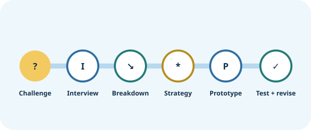

Investigate, make, test, and share with other people
Divide roles, challenge each other's assumptions, and make decisions together.
Sketch, build with paper or objects, design an activity, or create an AI interaction.
Listen to teachers and learners, then improve the project based on what actually happens.
Show the problem, your prototype, what changed, and what your team learned.
Your project at a glance
Each stage answers one question. You can go backward whenever testing changes what you understand.
Some decisions are yours; some are stronger together
Try the activity or tool first. Bring your thinking—not a blank page—to the conversation.
Work with your advisor when the decision affects the learning problem, strategy, prototype, or evidence.
Pause for approval when privacy, platform use, testing with another person, or public sharing is involved.
Move through six stages
Each stage is a mission. Complete the work, save the artifact, and use an advisor checkpoint when the decision needs another perspective. The process is iterative—you can return to an earlier stage whenever testing changes what you understand.
Who are you trying to help learn?
League projects can start with a challenge you experience yourself or a challenge experienced by someone else. Either way, use evidence rather than assumptions.
Current project lens: Help someone else learn
Who is the teacher-client?
Your teacher may be your first client. A client is the person whose learning problem you are trying to understand and help solve. A teacher-client may tell you about something their students often struggle to learn. Your advisor may also be your teacher-client—you do not need to find a separate teacher.
Your job is not simply to build whatever the teacher asks for. You listen, investigate where learning gets hard, and design something that may help.
Choose how much guidance you want
Your team can use more support at the beginning and less support as you become more independent. This is separate from how technically complicated your final product is.
Current choice: Guided
Three ways your team might build
You will choose later, after you understand the learning problem. These are options—not rankings.

Make a learning experience
Use AI to help design a game, card deck, printable activity, experiment, role-play, practice routine, movement activity, or physical learning aid.

Build an AI learning tool
Create a reusable conversational experience that asks, responds, gives feedback, and keeps the learner doing the important thinking.

Go further
If your team already has the technical experience, you can explore a more advanced digital build with your advisor. More technology does not mean a better project.
See how a small project can grow from a real problem
These are examples to learn from, not projects to copy. Each one moves through the same process but ends in a different kind of learning experience.

Slope and steepness
- Teacher problemStudents can calculate slope but do not connect it to steepness.
- Interview clueThe learner says the formula works when numbers are given but the graph still feels disconnected.
- BreakdownConnecting rise/run as a ratio to the visual direction and steepness of a line.
- StrategyCompare examples and connect representations.
- PrototypeRuler + line cards + whiteboard activity; AI helps brainstorm variations and reflection questions.
- Test + revisionThe learner predicts steepness better but confuses negative slope, so the team adds contrast cases.
Biology vocabulary
- Teacher problemA student recognizes vocabulary while rereading but cannot recall it later.
- Interview clueThe learner studies mostly by looking over definitions again.
- BreakdownRetrieving a term or meaning without seeing it first.
- StrategyRetrieval practice with varied cues.
- PrototypeA partner card challenge; AI proposes practice variations that students verify and curate.
- Test + revisionSome cards give too much of a hint, so the team changes the cue progression.
Understanding word problems
- Teacher problemA learner starts calculating before identifying what the problem is asking.
- Interview clueThe learner can calculate once a plan is clear but rushes into operations.
- BreakdownIdentifying givens, unknowns, and relationships before choosing an operation.
- StrategyBreak the task into steps and prompt self-explanation.
- PrototypeA conversational coach that asks questions without solving the problem.
- Test + revisionThe first version asks too many questions, so the team shortens the sequence and adds a reflection check.
Work as one team
Roles help divide responsibility, but they are not permanent jobs. Rotate, overlap, and make sure everyone can explain the whole project.